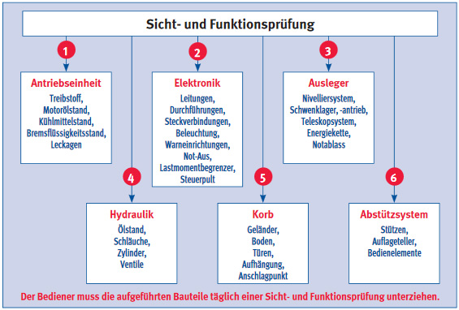

Vermieter von Hubarbeitsbühnen benötigen qualifizierte Mitarbeiter, welche die technische Einweisung in hoher Qualität durchführen; z. B. Qualifikation durch die IPAF-Einweiserkurse. Grundsätzlich sind die Bestimmungen der Fahrpersonalverordnung (FPersV) einzuhalten.
Da die Vermietung von Hubarbeitsbühnen keinen besonderen gesetzlichen Forderungen unterliegt, kommt den Vermietern ein ganz besonderes Maß an Eigenverantwortung, auch im Hinblick auf den Arbeits- und Gesundheitsschutz, zu. Vermietung von Hubarbeitsbühnen bedeutet, Verantwortung über Leben und Gesundheit des Mieters und der Nutzer von Arbeitsbühnen mit zu übernehmen.
Im Wesentlichen sollte ein Vermieter von Hubarbeitsbühnen aus Sicht des Arbeitsschutzes folgende Anforderungen erfüllen:
Bei einer Vermietung überzeugt sich der Vermieter davon, dass die Voraussetzungen für einen vorschriftsmäßigen Transport durch den Mieter gegeben sind. Ist dies nicht der Fall, führt er den Transport selbst durch. Für die unterschiedlichen Hubarbeitsbühnen ist z. B. zu beachten:
Grundsätzlich sind die Bestimmungen der Fahrpersonalverordnung (FPersV) einzuhalten (z. B. Lenk- und Ruhezeiten, Kontrollgerät, erforderliche Kontrollgerätekarten (Fahrer-, Werkstatt-, Unternehmens- und Kontrollkarten, ...)).
Die bühnenbezogene Einweisung obliegt dem Mieter. Dieser kann auf fachkundiges Personal des Vermieters zurückgreifen, welches die Bediener theoretisch und praktisch in die sichere Handhabung der Hubarbeitsbühne einweist. Die Einweisung durch den Vermieter sollte Bestandteil des Mietvertrages sein. Dabei dienen die Betriebsanleitung und das Betriebshandbuch als Grundlage (siehe auch Abschnitt 4.2).
Die maschinenspezifische Einweisung muss u. a. folgende Themen umfassen:
Während der Einweisung/Übergabe hat der Vermieter einzuschätzen, ob der Mieter für die Benutzung der Arbeitsbühne geeignet ist. Bei Zweifeln aufgrund von Höhenangst, fehlendem Sicherheitsbewusstsein, technischen Kenntnissen o. Ä. ist von der Vermietung Abstand zu nehmen.
Bei der Einweisung des Mieters ist auf seine Pflicht zum täglichen Check (bzw. vor jeder Schicht) der Hubarbeitsbühne besonders hinzuweisen (Checklisten enthalten die Bedienanleitungen und Handbücher).
Die Prüfungen durch den Vermieter und seine Mitarbeiter beziehen sich auf die grundlegende Kontrolle des betriebssicheren Zustandes der fahrbaren Hubarbeitsbühne vor und nach dem Mieteinsatz. Die Bedienungsanleitung und das Betriebshandbuch dienen dabei als Prüfgrundlage.
Neben dem Aufbau der Hubarbeitsbühne und Durchfahren aller Stellungen sollte Folgendes geprüft werden:
Der Vermieter ist grundsätzlich auch verantwortlich für die Durchführung der Prüfungen, die in der Verantwortung des Betreibers liegen (siehe Abschnitt 7.2). Darüber hinaus veranlasst er die Durchführung der Prüfungen nach StVZO.
Nach jedem Einsatz sollte die Bühne gründlich gereinigt werden, um auch kleinere Mängel und Beschädigungen zu erkennen. Außerdem trägt das äußere Erscheinungsbild zum Vertrauen in die Zuverlässigkeit einer fahrbaren Hubarbeitsbühne bei, was die psychischen Belastungen in großen Höhen reduziert.
Unter Berücksichtigung der oben aufgeführten Bedingungen kann der Vermieter die fahrbaren Hubarbeitsbühnen guten Gewissens erneut vermieten.
Die wiederkehrende Sicherheitsprüfung nach BetrSichV und BG-Regel "Betreiben von Arbeitsmitteln" (BGR 500) liegen in der Verantwortung des Eigentümers der Hubarbeitsbühne. Diese Prüfungen dürfen nur von hierfür befähigten Personen (Sachkundige) durchgeführt werden.
Der Unternehmer als Betreiber von fahrbaren Hubarbeitsbühnen ist verpflichtet, alle erforderlichen Maßnahmen zu treffen, die seinen Beschäftigten ein sicheres Arbeiten ermöglichen.
Hierzu gehören insbesondere:
Durch Planung und Organisation der Arbeiten und des Arbeitsablaufs sollen die Gefährdungen minimiert werden (ArbSchG und BetrSichV).
Die Gefährdungsbeurteilung ist ein wirksames Instrument, um diesen Anforderungen gerecht zu werden (siehe Abschnitt 6). Aus ihr gehen u. a. die Notwendigkeit der Erstellung von Betriebsanweisungen, Durchführung von Unterweisungen und Beauftragungen der Bedienpersonen hervor. Darüber hinaus gibt sie auch die Auswahl der geeigneten fahrbaren Hubarbeitsbühne vor.
Der Hersteller stellt dem Betreiber einer fahrbaren Hubarbeitsbühne die Betriebsanleitung zum sicheren Betrieb des Gerätes zur Verfügung, welche immer vor Ort bei der Hubarbeitsbühne sein muss. In ihr werden mögliche Gefährdungen, Restrisiken sowie die diesbezüglich notwendigen Maßnahmen beschrieben.
Die örtlichen Gegebenheiten und die speziellen Einsatzbedingungen sowie die von der Hubarbeitsbühne auszuführenden Arbeiten kann der Hersteller in seiner Betriebsanleitung nicht erfassen.
Aus diesen Gründen sowie aufgrund der Forderung der TRBS 2111 Teil 4, "Mechanische Gefährdungen – Maßnahmen zum Schutz vor Gefährdungen durch mobile Arbeitsmittel", muss der Betreiber der Hubarbeitsbühne eine Betriebsanweisung unter Berücksichtigung der Betriebsanleitung und der jeweiligen Einsatzbedingungen in der Landessprache des Bedieners erstellen (Muster einer Betriebsanweisung siehe Anhang 4).
Die Betriebsanweisung enthält unter anderem beispielhaft:
Der Umgang mit fahrbaren Hubarbeitsbühnen erfordert spezielle Kenntnisse. Für die Vermittlung dieser Kenntnisse an die Bedienpersonen tragen der Unternehmer – der Betreiber – oder die beauftragten Führungskräfte die Verantwortung. Mithilfe der maschinenspezifischen Einweisung und der allgemeinen Unterweisung sowie einer Schulung nach DGUV Grundsatz 966 "Ausbildung und Beauftragung der Bediener von Hubarbeitsbühnen" werden die Bedienpersonen in die Lage versetzt, mit fahrbaren Hubarbeitsbühnen so umzugehen, dass Gefährdungen weitestgehend ausgeschlossen werden können.
Bei Anmietung von fahrbaren Hubarbeitsbühnen obliegt die Ersteinweisung und Unterweisung dem für die Bediener verantwortlichen Unternehmer. Der Unternehmer hat sicherzustellen, dass alle Personen ausreichend im Umgang mit fahrbaren Hubarbeitsbühnen eingewiesen und unterwiesen werden.
Neben der speziellen maschinenbezogenen Ein- und Unterweisung im Umgang mit Hubarbeitsbühnen sind die Beschäftigten über weitere Gefährdungen und daraus resultierende Schutzmaßnahmen, die aus der durchzuführenden Arbeit oder aus dem Umfeld entstehen, zu unterweisen. Zum Nachweis der korrekten Unterweisung erfolgt deren Dokumentation (siehe Anhang 9). Die Betriebsanweisung stellt in Verbindung mit der Gefährdungsbeurteilung die Grundlage für Unterweisungsinhalte dar.
| Sicheres Arbeiten setzt Wissen voraus |
| Wissen und Können durch Unterweisung und Einweisung |
Nachfolgend sind einige Hinweise zum Inhalt einer Unterweisung beispielhaft aufgeführt:
Weitere Unterweisungsinhalte bei Bedarf:
Unterweisungen erfolgen anlassbezogen, d. h.
Darüber hinaus sind Unterweisungen nach Bedarf, mindestens jedoch einmal jährlich, durchzuführen.
Durch Ein- und Unterweisung sowie Training und ausreichende Kontrolle gewährleistet der Unternehmer, dass die Beschäftigten mit fahrbaren Hubarbeitsbühnen bestimmungsgemäß umgehen.
Hat der Bediener nachgewiesen, dass er mit einer bestimmten Bauart von Hubarbeitsbühnen sicher umgehen kann, bestätigt der Unternehmer dies mit einer schriftlichen Beauftragung. Diese schriftliche Beauftragung kann formlos (Beispiel siehe Anhang 3) oder mit einem Bedienerausweis (Beispiel siehe Anhang 2) erfolgen. Neben dem Unternehmer können auch autorisierte Führungskräfte die Beauftragung vornehmen.
Hinweis: Für Auslandstätigkeiten können ggf. besondere Befähigungsnachweise notwendig sein (z. B. PAL-Karte der IPAF).
|
Achtung! Arbeiten mehrere Personen an Hubarbeitsbühnen zusammen, so hat der Unternehmer einen Aufsicht Führenden zu bestimmen. |
Das Bedienen ist mit einem speziellen Risiko für die Bedienperson selbst und für die im Umfeld befindlichen Personen verbunden. Bedienpersonen müssen für diese Aufgabe besonders geschult und ausgebildet sein, da sie für das Aufstellen und Steuern verantwortlich sind.
An die Bedienperson einer fahrbaren Hubarbeitsbühne werden folgende Voraussetzungen gestellt:
Sie muss
Weitere grundsätzliche Anforderungen für eine schriftliche Beauftragung sind, dass die Bedienperson
Um diese Voraussetzungen abzuklären, empfehlen sich Eignungsuntersuchungen nach den BG-Grundsätzen G 25 „Fahr-, Steuer- und Überwachungstätigkeiten“ (BGI 504-25) sowie G 41 „Arbeiten mit Absturzgefahr“ (BGI 504-41).
Eine fahrbare Hubarbeitsbühne ist nach der Bedienungsanleitung des Herstellers in die Transportposition zu bringen und neben einer visuellen Kontrolle der Beleuchtung und des Anschlusses an das Fahrzeug mit einem geeigneten Zugfahrzeug zu transportieren. Dabei müssen Fahrpraxis beim Umgang mit langen einachsigen Fahrzeugen und die entsprechend vorgeschriebene Führerscheinklasse vorhanden sein.
Während des Transportes hat der Bediener außerdem zu beachten, dass immer ein ausreichender Sicherheitsabstand vorhanden ist und Kreuzungen und Unterführungen sowie enge Durchfahrten langsam zu befahren sind (Durchfahrtshöhe beachten).
Bei der Übernahme bzw. vor Inbetriebnahme der Hubarbeitsbühne sollte die Bedienperson Einsicht in das letzte Prüfprotokoll nehmen, um sich ein Bild über den sicherheitstechnischen Zustand der Bühne zu verschaffen und die regelmäßige Prüfung durch eine befähigte Person zu kontrollieren.
Am Einsatzort muss generell geprüft werden, ob sich im Arbeitsbereich der fahrbaren Hubarbeitsbühne ungeschützte elektrische Anlagen oder Freileitungen befinden und ob beispielsweise die vorhandene fahrbare Hubarbeitsbühne auch außerhalb von geschlossenen Räumen eingesetzt werden darf.
Vor dem Benutzen einer fahrbaren Hubarbeitsbühne muss eine visuelle Kontrolle des Arbeitsumfeldes erfolgen. Der Untergrund muss ausreichend tragfähig und eben sein. Seine Neigung darf den vom Hersteller genehmigten Winkel nicht überschreiten.
Bei der Aufstellung der fahrbaren Hubarbeitsbühne ist es auf schrägem Untergrund notwendig, sie gegen Wegrollen zu sichern, z. B. durch Vorlegekeile.
An der Arbeitsstelle ist zu kontrollieren, dass keine Öffnungen, unterirdische Kabel oder Leitungen, Deckel und aufgeschüttetes Erdreich vorhanden sind. Bei Arbeiten im öffentlichen Bereich ist der Arbeitsbereich der Hubarbeitsbühne mit Informationen, Schildern bzw. Absperrungen zu begrenzen.
Wenn sich Arbeiten auf den öffentlichen Straßenverkehr auswirken, wird eine verkehrsrechtliche Anordnung erforderlich (StVO § 45), welche zur Beantragung einen entsprechenden Verkehrszeichen- oder auch Regelplan benötigt.

Nach dem Aufstellen und vor dem Einsatz ist arbeitstäglich eine Sicht- und Funktionsprüfung durchzuführen. (Bild 5-1)
Sollten bei der Sicht- und Funktionsprüfung Mängel erkannt werden, sind diese zu melden und durch fachkundiges Personal abzustellen. Eine Dokumentation der täglichen Sicht- und Funktionsprüfung mit Aufführung der festgestellten Mängel wird empfohlen.
Bei Mängeln, welche die Sicherheit gefährden, darf die Hubarbeitsbühne nicht in Betrieb genommen werden. Sonst ist nicht nur die eigene Sicherheit in Gefahr, sondern auch die der im Umfeld tätigen Personen!
Nach Arbeitsende ist die Hubarbeitsbühne sicher abzustellen (feste, ebene Fläche ohne Hindernisse und Verkehr), der Ausleger ist zu senken (Transportstellung), der Schlüsselschalter ist auf Position AUS zu drehen und der Schlüssel ist abzuziehen. Des Weiteren sollten die Räder gegen Wegrollen gesichert sein.
Instandhaltungs- und Prüffirmen haben ein hohes Maß an Verantwortung. Die Sicherheit der Personen, die Hubarbeitsbühnen benutzen und mit diesen Arbeiten in großen Höhen ausführen, ist u. a. abhängig von der gewissenhaften Durchführung der Instandhaltungs- und Prüftätigkeiten. Ausreichende Qualifikation und Zuverlässigkeit sind Grundvoraussetzungen für das Instandhaltungs- und Prüfpersonal. Oberste Priorität haben immer die Sicherheit der Benutzer.
Instandhaltungs- und Prüffirmen müssen räumlich und technisch so ausgestattet sein, dass die Arbeiten in vollem Umfang und sicher ausgeführt werden können. Dazu gehören unter Umständen Krane, Hebebühnen, Gruben, Messgeräte, Prüfstände, Spezialwerkzeug usw.
Aus- und Weiterbildungsmaßnahmen für das Wartungs- und Instandsetzungspersonal sind zu organisieren. Von der Wirksamkeit dieser Maßnahmen sollte sich der Vorgesetzte überzeugen. Die durchzuführenden Arbeiten dürfen nur auf Personen übertragen werden, die ausreichende Fähigkeiten und Kenntnisse besitzen.
Eine enge Zusammenarbeit mit den Herstellern der Geräte garantiert einen aktuellen Wissensstand.
Bei Instandsetzungsarbeiten dürfen ausschließlich Originalteile oder vom Hersteller zugelassene Bauteile verwendet werden, um die Sicherheit des Gerätes nicht zu beeinträchtigen.
|
Achtung! Schweißarbeiten an tragenden Teilen von Hubarbeitsbühnen, die zum Teil aus hochfesten Feinkornstählen oder komplizierten Aluminiumlegierungen bestehen, dürfen nur mit Genehmigung des Herstellers und unter Beachtung der Schweißvorgaben erfolgen. Danach ist eine außerordentliche Prüfung nach BGG/GUV-G 966 bzw. BetrSichV durchzuführen. |
An die Qualifikation des Wartungs- und Instandsetzungspersonals von fahrbaren Hubarbeitsbühnen stellt der Gesetzgeber keine besonderen Anforderungen.
Die unternehmerische Verantwortung gebietet jedoch, für ausreichende Ausbildung, Erfahrung und Kenntnisse der Personen zu sorgen, die eigenständig Wartungs- und Reparaturarbeiten ausführen. Mit diesen Arbeiten sollten nur Personen beauftragt werden, welche die nachstehenden Qualifikationen besitzen.
Geeignete Personen für die Wartung und Instandsetzung von fahrbaren Hubarbeitsbühnen sind z. B.
Die mit der Prüfung beauftragten Personen müssen mindestens befähigte Personen, also „Sachkundige“ oder „Sachverständige“ sein (siehe BG-Regel „Betreiben von Arbeitsmitteln“ [BGR 500], Kapitel 2.10 „Betreiben von Hebebühnen“, Abschnitt 2.9, BG-Grundsatz „Prüfung von Hebebühnen“ [BGG 945] und TRBS 1203 „Befähigte Personen“).
Prüfungen führen z. B. durch:
Die Qualifikation der Sachverständigen für Hebebühnen regelt im Einzelnen der BG-Grundsatz „Prüfung von Hebebühnen“ (BGG 945).
Sachkundige im Sinne des BG-Grundsatzes 945 sind befähigte Personen, wie
Die Qualifikation der befähigten Personen regelt die TRBS 1203 ˶Befähigte Personen˝.
Für befähigte Personen gilt: